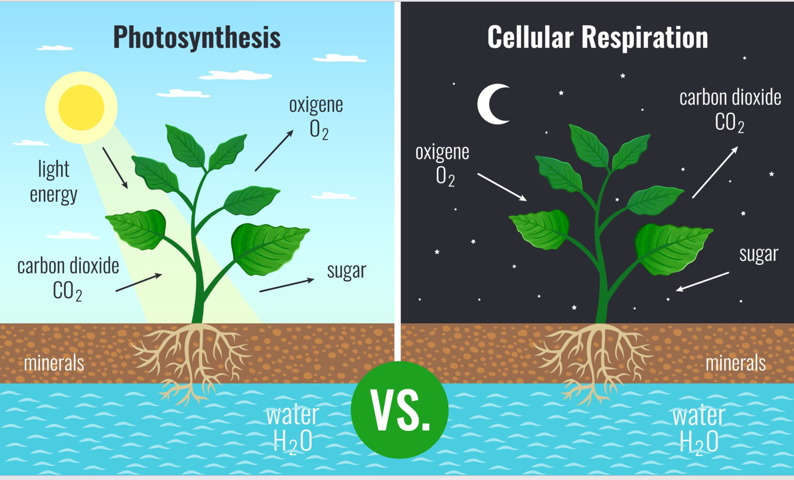

Learn More → -Cation Exchange in the Soil: Mung bean roots facilitate this process through cation exchange. During respiration, roots produce carbon dioxide (CO₂), which reacts with water in the soil to form carbonic acid (H₂CO₃). This weak acid dissociates into hydrogen ions (H⁺). The roots actively release these H⁺ ions into the soil, where they displace the nutrient cations attached to soil particles. As a result, the nutrients are freed into the soil solution and can be absorbed by the plant roots.
-Metabolic Processes in the Plant: water and nutrients are absorbed and transported to the leaves, the plant carries out metabolic reactions that support growth and survival.
i. Photosynthesis (Anabolism):
Photosynthesis is an anabolic process in which the plant converts light energy into chemical energy stored in glucose.
6CO2 + 6H2O -> C6H12O6 + 6O2
This process occurs in the chloroplasts of leaf cells and produces glucose, which serves as an energy source, and oxygen, which is released into the atmosphere.
ii. Cellular Respiration (Catabolism): Cellular respiration is a catabolic process that breaks down glucose to release energy in the form of ATP.
C6H12O6+6O2→6CO2+6H2O+ATP
ATP generated through respiration is used to power essential activities such as growth, cell division, and active transport processes like nutrient uptake.